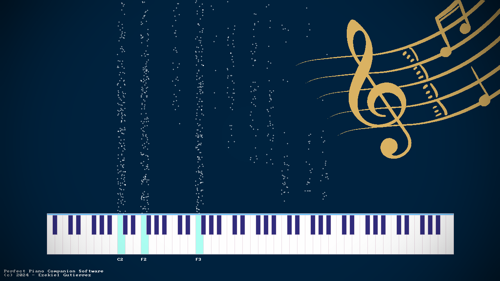
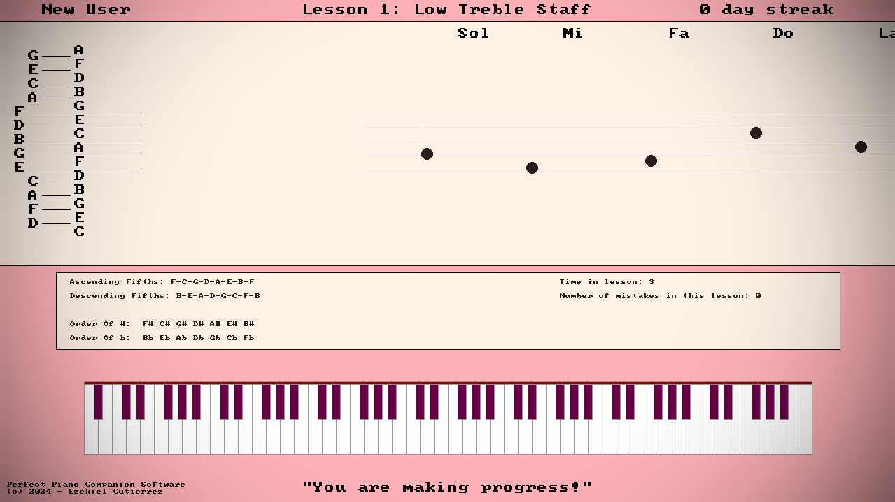

"Music can change the world" - Beethoven
Dashboard
Ezekiel applied his background in software engineering to design an innovative interactive piano companion program.
This software, along with a MIDI piano device, helps encourage daily practice and makes it easier for new students to know what skills to work on each week.

Visualizer
The visualizer and metronome areas are fun to use while practicing repertoire pieces or for creative playing!

Interactive Lessons
This software helps students improve their ability to sight read music notation fluently.
With lessons on scales, arpeggios, chords and sight reading there is endless opportunity for improvement for players of many different levels!
Piano Companion Software Click to Download